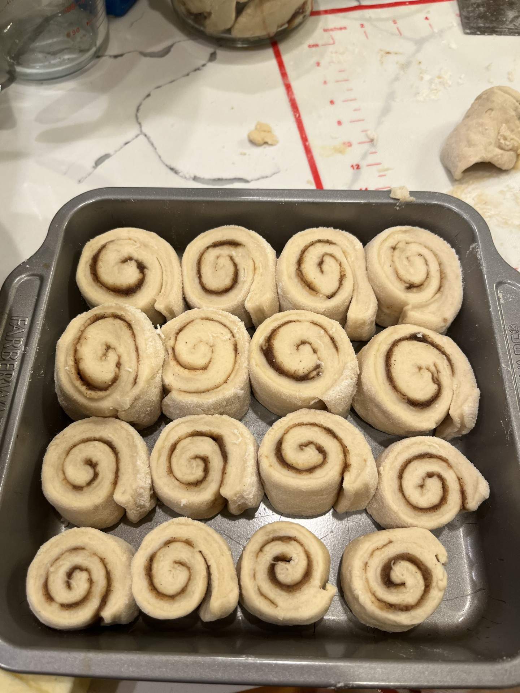

Crème Brûlée
Ingredients:
Heavy cream
Yeast Mixture: 3/4 cup warm water, 2 1/2 tsp active yeast, 1 tbsp sugar
Dough mixture: 3 cup AP flour, 1/3 cup sugar, 1 egg+1 egg yolk whisked, 4 tbsp melted unsalted butter, 1 tsp kosher salt, yeast mixture
Filling mixture: 1 cup brown sugar, 2 tbsp cinnamon, dash of nutmeg, 1/8 tsp ground cloves, 1/3 cup room temperature unsalted butter
Frosting mixture: 4oz room temperature cream cheese, 3 tbsp room temperature unsalted butter, 1 tsp vanilla, 3/4 cup sifted powdered sugar, coffee creamer (tsp at a time)
Step 1: Cover the yeast mixture with a wet paper towel and let it sit for 10 minutes.
Step 2: Knead the dough mixture on a flour surface for 8 minutes.
Step 3: Cover the dough mixture with a wet cloth and let it rest in a lightly floured bowl for 1.5-2 hours.
Step 4: Punch the dough gently and add it onto a flour surface. Roll it out until it's half inch thick.
Step 5: Add filling mixture and roll it up. Cut with a piece of floss and place it onto a pan with parchment paper.
Step 6: Let it rest for 30 minutes then add a tbsp of heavy cream.
Step 7: Preheat oven to 350 and bake for 25-30 minutes.
Step 8: Add frosting on top.